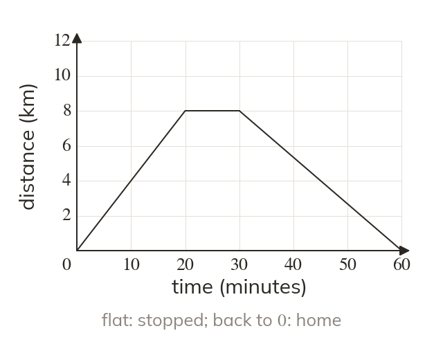

Reading a journey
A distance-time graph shows distance from the start against time. A horizontal line means stationary. A line back down to zero means a return to the start.
A distance-time graph shows distance from the start against time. A horizontal line means stationary, and a line back down to zero means a return to the start.